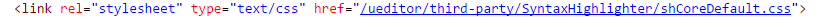
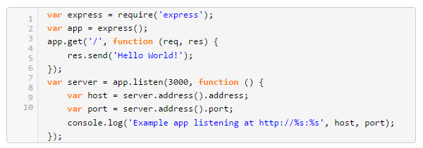
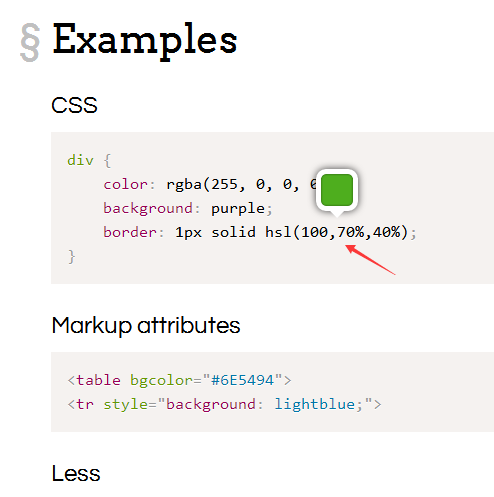
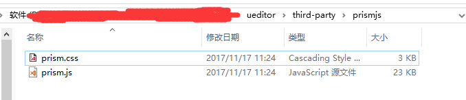
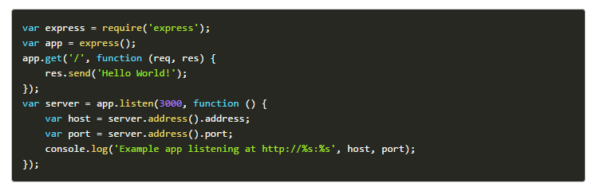

用Prismjs给自己的博客文章增加代码高亮功能

我博客的文章管理页面中文本编辑器是用的百度的Ueditor。
百度的Ueditor本身也是支持代码高亮的。但是代码高亮的效果我不是特别满意。
我先来一个示例，展示一下Ueditor自带的代码高亮的效果。
找了一段expressjs示例js代码：
var express = require('express');
var app = express();
app.get('/', function (req, res) {
res.send('Hello World!');
});
var server = app.listen(3000, function () {
var host = server.address().address;
var port = server.address().port;
console.log('Example app listening at http://%s:%s', host, port);
});
之前使用Ueditor自带的SyntaxHighlighter插件
Ueditor下载的代码包中自带了一个SyntaxHighlighter的第三方文件夹，用的是shCore.js

使用的时候，引入一个shCoreDefault.css的文件和一个shCore.js的文件。然后执行SyntaxHighlighter.all();便可实现代码高亮。


用Ueditor自带的效果是这样：

下面使用Prismjs
百度搜索Prismjs之后，找到了它的官网 http://prismjs.com/
这是一个既小又强大的语法高亮插件。
点击首页右上角的醒目的DOWNLOAD之后进入下载页面。
你会发现它是可以自定义下载的，可以选择开发版或者压缩版，同时提供了7种主题。我预览了之后选择了Okaidia。

编程语言支持是相当的多。我想了一下，我选择了markup,css,c-like,javascript,go,java,less,markdown,sass,php,python,react jsx。html对应里边的markup,没找到vue相关的vux。
还有可选的许多的插件，

我选择了一个Line Numbers的插件。
这些插件很细心，比如那个Previewer:Color插件：

当你的鼠标放置在代码的颜色文本上，就会有一个气泡出来，让你预览这个颜色。
选好之后，分别点击DOWNLOAD JS，DOWNLOAD CSS，下载两个文件。我把它放在项目中

在页面中分别引用
<link rel="stylesheet" type="text/css" href="@{static}/ueditor/third-party/prismjs/prism.css">
<script type="text/javascript" src="@{static}/ueditor/third-party/prismjs/prism.js"></script>
然后编写代码把Ueditor的pre格式转成Prismjs兼容的格式。我这里的具体做法是，找到页面中所有带有class属性的pre标签，用正则表达式提取出接在brush:后面的语言字符。然后把代码放置在一个code元素里边，给code元素添加一个language-xxx的class，用code元素作为参数调用Prism.highlightElement。代码如下：
<script>
var $codepre = $("pre[class]");
if($codepre.length>0){
for(var i = 0;i<$codepre.length;i++){
var item = $codepre.eq(i);
var language = "";
item.attr("class").replace(/brush:([^;]+)/,function(a,b){
language = b;
});
if(language){
var codehtml = item.html();
var code = $("<code>");
code.attr("class","language-"+language);
code.html(codehtml);
item.html(code);
Prism.highlightElement(code[0]);
}
}
}
</script>
大功告成！
献上效果图：

效果还不错。我后面再关注它有没有BUG方面的问题。
测试完之后就把这个功能上线到我的这个博客。